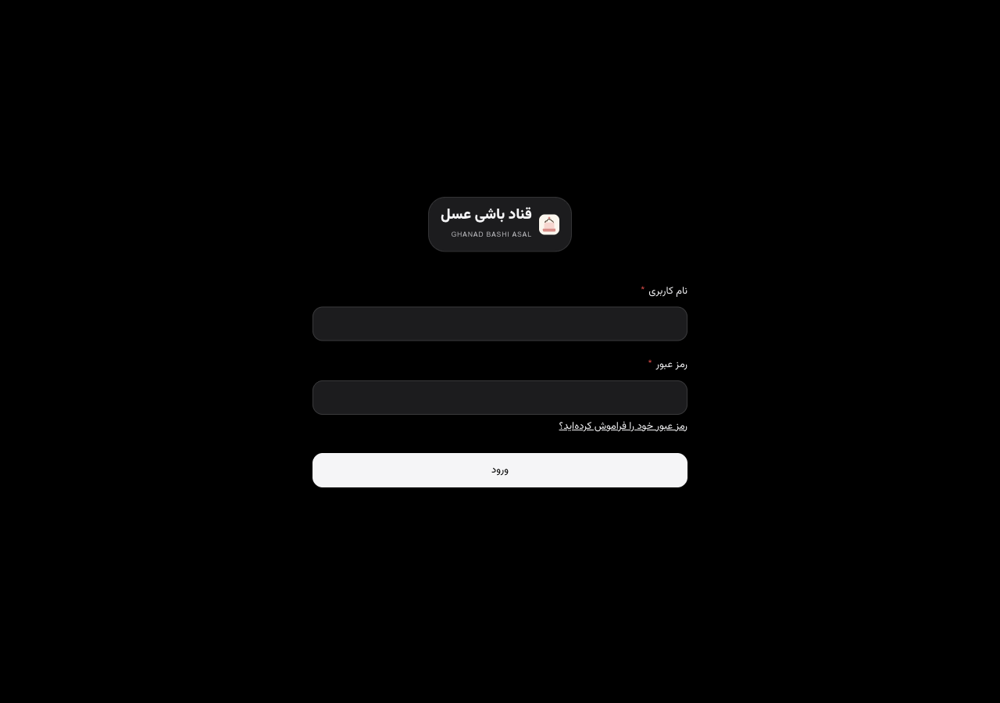
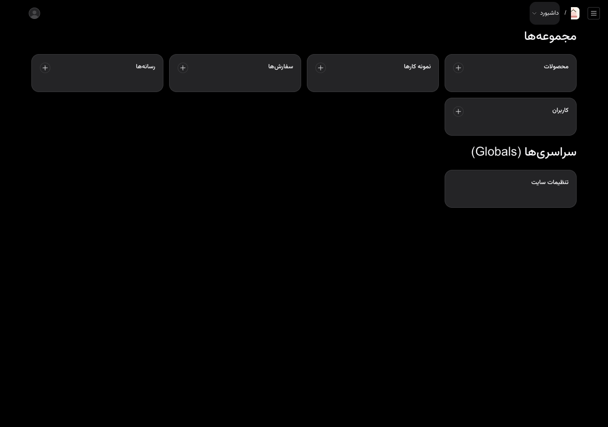
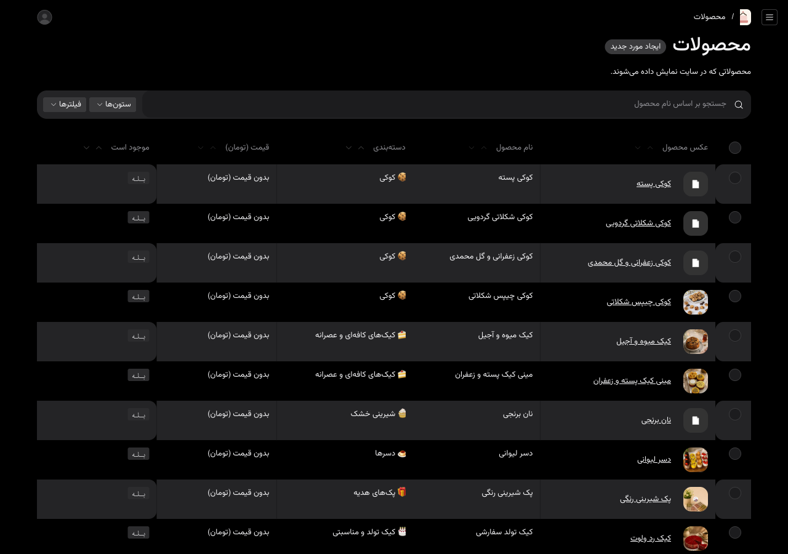
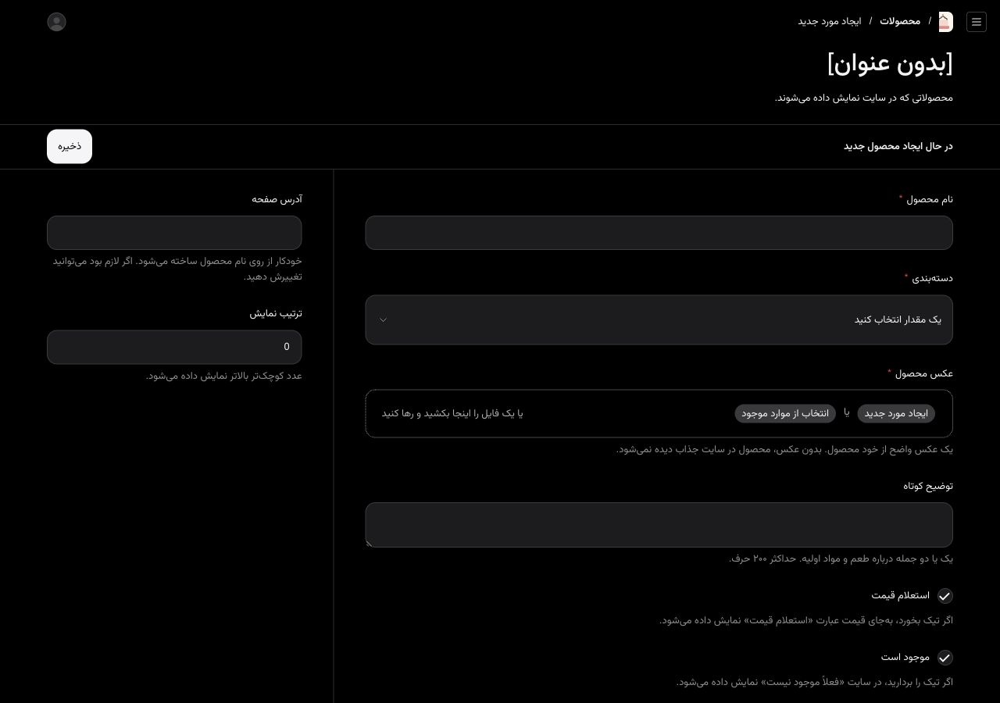
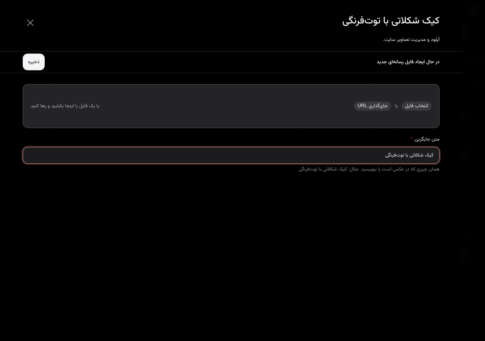
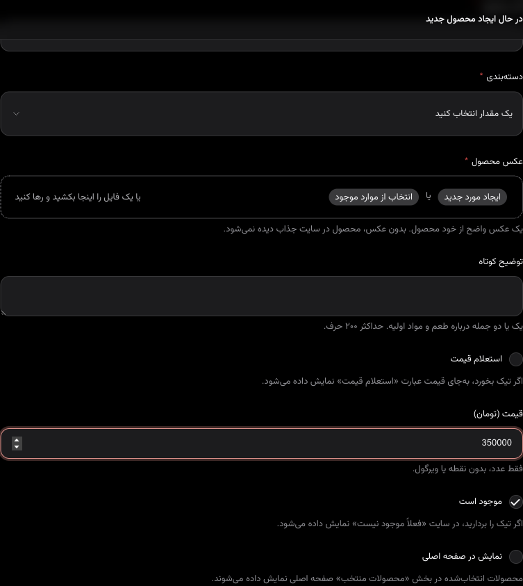
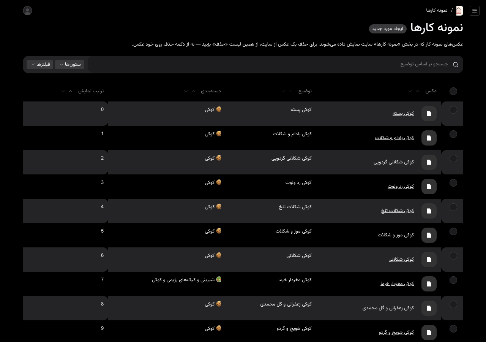
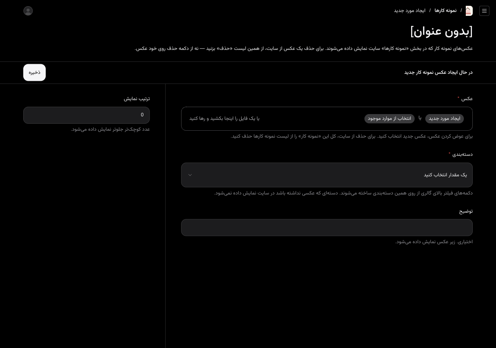
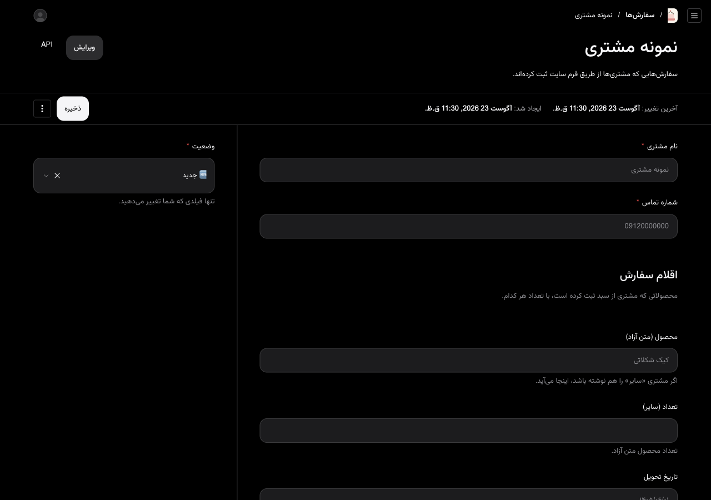

راهنمای مدیریت سایت قناد باشی عسل
با این راهنما خودتان محصولات، قیمتها، عکسها، سفارشها و شماره تماس را عوض میکنید. لازم نیست برای این کارها به کسی پیام بدهید.
آدرس ورود: ghanadbashi.vercel.app/admin
نام کاربری و رمز عبور برایتان جداگانه فرستاده میشود. آنها را به کسی نگویید.
بعد از هر ذخیره، حدود یک دقیقه صبر کنید و سایت را از نو باز کنید تا تغییر را ببینید.
۱. ورود به پنل

- در گوشی یا رایانه این آدرس را باز کنید: ghanadbashi.vercel.app/admin
- نام کاربری را بنویسید (نه شماره تلفن)
- رمز عبور را بنویسید
- روی ورود بزنید
اگر صفحه بالا نیامد، اینترنت را چک کنید و دوباره همان آدرس را باز کنید.
بعد از ورود این صفحه را میبینید:

| کجا بروید | برای چه کاری |
|---|
| محصولات | اضافه کردن، قیمت، تمامشدن کالا |
| نمونه کارها | عکسهای گالری سایت |
| سفارشها | دیدن سفارش مشتری و عوض کردن وضعیت |
| تنظیمات سایت | شماره تماس، واتساپ، اینستاگرام |
به کاربران و رسانهها دست نزنید. برای خروج، پایین منو روی خروج بزنید.
۲. اضافه کردن محصول جدید

- از منوی راست روی محصولات بزنید
- بالا سمت چپ روی ایجاد محصول جدید بزنید

- نام محصول را بنویسید
- دستهبندی را انتخاب کنید
- برای عکس روی ایجاد مورد جدید بزنید
- روی انتخاب فایل بزنید و عکس را از گوشی انتخاب کنید
- متن جایگزین را پر کنید
- روی ذخیره داخل پنجره عکس بزنید
- توضیح کوتاه را بنویسید
- اگر قیمت مشخص است، تیک استعلام قیمت را بردارید و عدد را بنویسید
- تیک موجود است را بگذارید بماند
- اگر میخواهید در صفحه اول بیاید، نمایش در صفحه اصلی را تیک بزنید
- آدرس صفحه را دست نزنید
- روی ذخیره بزنید
متن جایگزین — این یکی را خالی نگذارید
بدون این نوشته، عکس ذخیره نمیشود.

همان چیزی که در عکس است را بنویسید. مثال درست: کیک شکلاتی با توتفرنگی. مثال غلط: عکس، ۱، asdf
۳. تغییر قیمت یک محصول

- محصولات را باز کنید و روی نام محصول بزنید
- اگر تیک استعلام قیمت خورده، آن را بردارید
- در قیمت (تومان) فقط عدد بنویسید — بدون نقطه یا ویرگول
- مثال: برای سیصد و پنجاه هزار تومان بنویسید 350000
- ذخیره کنید
۴. وقتی قیمت مشخص نیست — «استعلام قیمت»
- محصول را باز کنید
- تیک استعلام قیمت را بزنید
- در سایت بهجای عدد نوشته میشود «استعلام قیمت»
- ذخیره کنید
۵. پنهان کردن محصولی که تمام شده
محصول را پاک نکنید.
- محصول را باز کنید
- تیک موجود است را بردارید
- ذخیره کنید
در سایت نوشته میشود «فعلاً موجود نیست». هر وقت آماده شد، همان تیک را برگردانید.
۶. اضافه کردن عکس به گالری

- از منوی راست روی نمونه کارها بزنید
- روی ایجاد مورد جدید بزنید

- عکس را بارگذاری کنید و متن جایگزین را بنویسید
- دستهبندی را انتخاب کنید
- توضیح اختیاری است
- ذخیره کنید
برای حذف عکس از سایت، از همین فهرست کل نمونه کار را حذف کنید. روی خودِ عکس دکمه حذف نزنید.
۷. دیدن سفارشها و تغییر وضعیت

- از منوی راست روی سفارشها بزنید
- روی نام مشتری بزنید
- نام و شماره و تاریخ را بخوانید — عوضشان نکنید
- فقط وضعیت را عوض کنید
- ذخیره کنید
| وضعیت | یعنی |
|---|
| 🆕 جدید | تازه آمده؛ هنوز جواب ندادهاید |
| ✅ تأیید شده | با مشتری هماهنگ کردهاید |
| 📦 تحویل شده | کار تمام شده |
| ❌ لغو شده | سفارش انجام نمیشود |
سفارش جدید از داخل پنل نسازید.
۸. تغییر شماره تماس، واتساپ و اینستاگرام

- از منوی راست روی تنظیمات سایت بزنید
- صفحه را پایین بکشید تا برسید به اطلاعات تماس
- هر کدام را که لازم است عوض کنید و ذخیره کنید
| نام کادر | چطور بنویسید |
|---|
| شماره تماس | مثلاً 09369088311 |
| شماره واتساپ | با کد ایران و بدون صفر اول: 989369088311 |
| آیدی اینستاگرام | بدون @ — مثلاً ghanad_bashi_asal5 |
| محدوده فعالیت | اصفهان، بهارستان و حومه |
اگر واتساپ را با صفر بنویسید، دکمه واتساپ سایت برای مشتری کار نمیکند.
۹. عکس خوب چه ویژگیهایی دارد؟
- در نور روز گرفته شده باشد
- تقریباً مربع باشد
- حجمش کمتر از ۴ مگابایت باشد
- خود محصول در وسط باشد
- متن جایگزین را همیشه بنویسید: همان چیزی که در عکس است
۱۰. اگر مشکلی پیش آمد
- صفحه را ببندید و همان آدرس پنل را دوباره باز کنید
- خروج بزنید و دوباره وارد شوید
- اینترنت گوشی را یکبار خاموش و روشن کنید
- از وایفای به اینترنت همراه بروید، یا برعکس
- اگر عکس بالا نمیرود، حجمش را کم کنید و متن جایگزین را خالی نگذارید
اگر بعد از این پنج کار هنوز گیر کردید، پیام بدهید و بگویید کدام صفحه بود و چه دکمهای را زدید.
خودتان انجام بدهید: قیمت، موجود بودن، عکس جدید، درباره من، شماره تماس، دیدن سفارش.
جداگانه حساب میشود: صفحه جدید، شکل تازه برای سایت، پرداخت آنلاین.